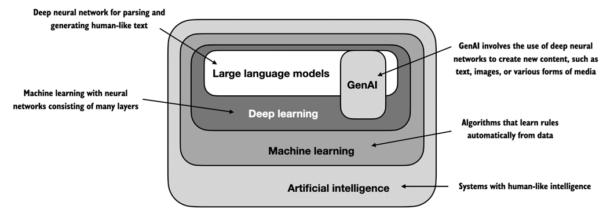
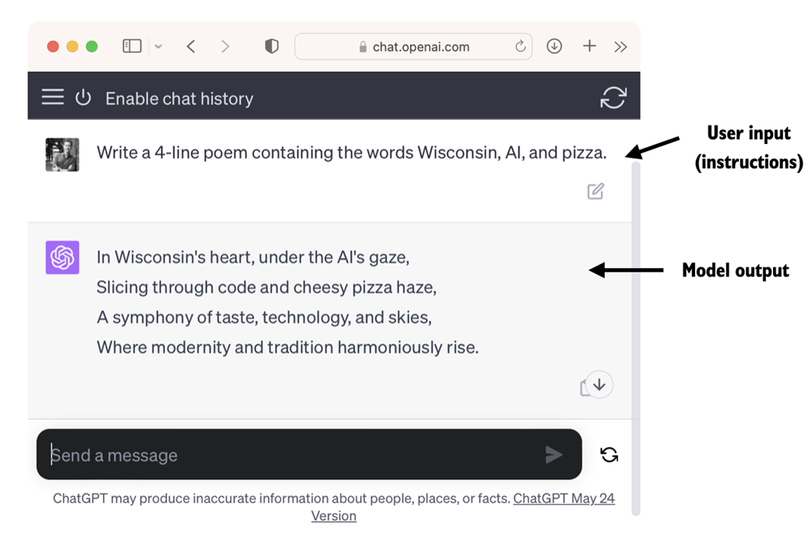
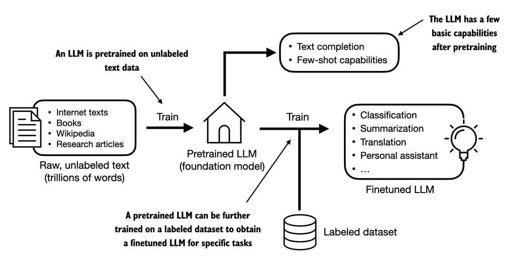
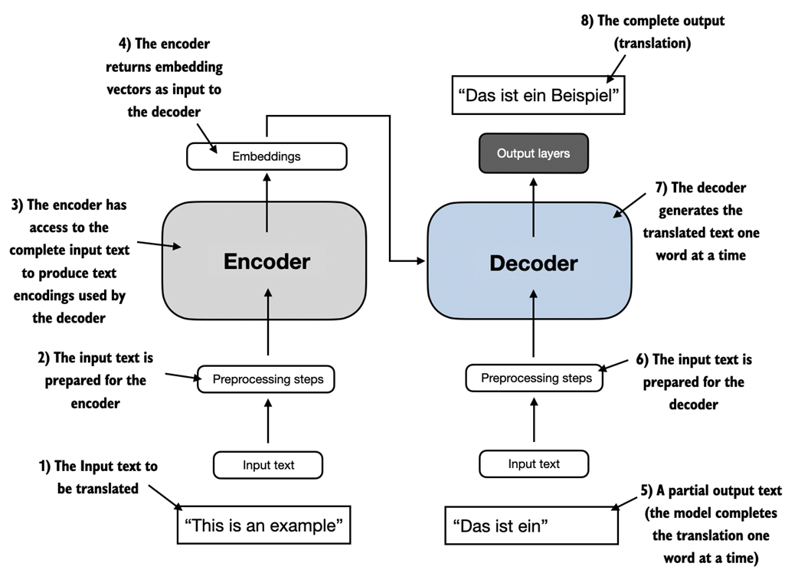
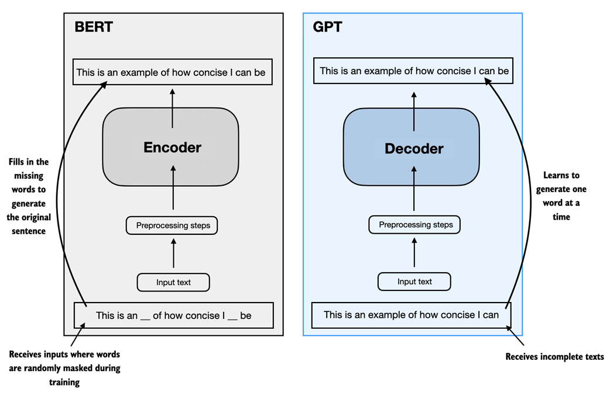
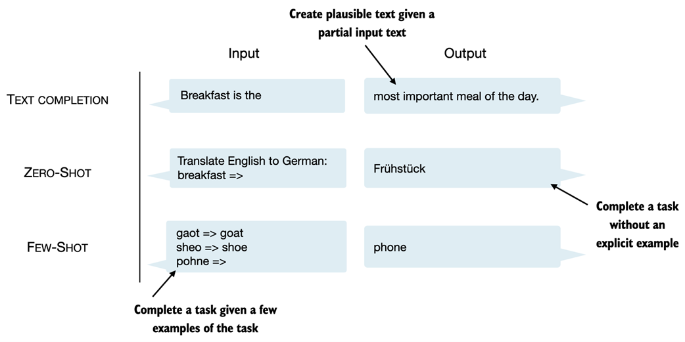
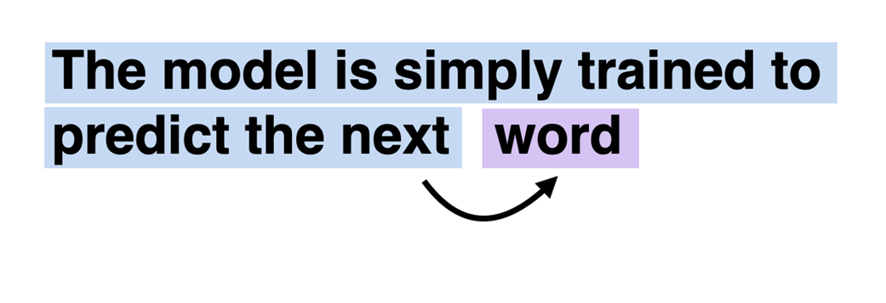
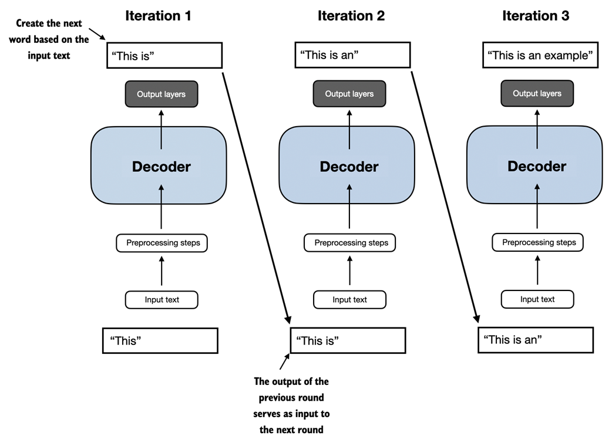
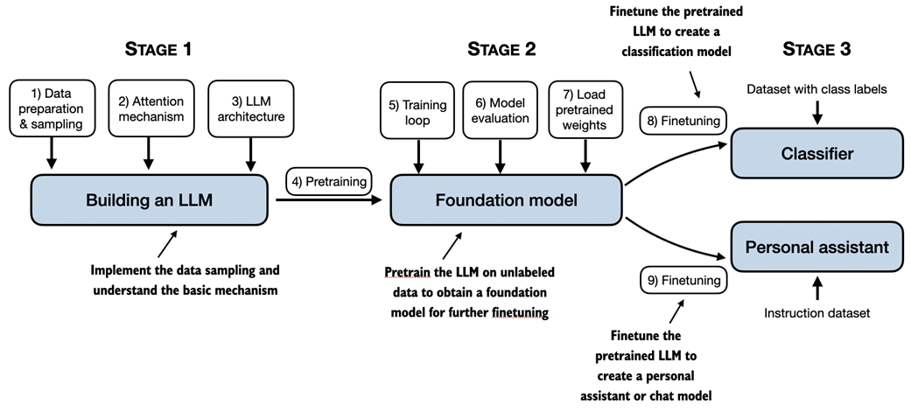

1.1 What is an LLM? p. 1-4
Large language models (LLMs), such as those offered in OpenAI's ChatGPT, are deep neural network models developed over the past few years. They ushered in a new era for natural language processing (NLP).
An LLM is a neural network designed to understand, generate, and respond to human-like text. These models are deep neural networks trained on massive amounts of text data, sometimes encompassing large portions of the entire publicly available text on the internet. The "large" in "large language model" refers to both the model's size in terms of parameters and the immense dataset on which it's trained.
Before LLMs
- Traditional methods excelled at categorization tasks (email spam classification, pattern recognition)
- They underperformed in tasks requiring complex understanding and generation: parsing detailed instructions, contextual analysis, creating coherent original text
- Previous models could not write an email from a list of keywords -- trivial for contemporary LLMs
LLMs and Deep Learning
- Enabled by advancements in deep learning (a subset of ML and AI focused on neural networks)
- Trained on vast quantities of text data, capturing deeper contextual information
- Significantly improved performance in text translation, sentiment analysis, question answering, and more
LLMs vs. Earlier NLP Models
- Earlier NLP models: designed for specific tasks (text categorization, language translation)
- LLMs: demonstrate broader proficiency across a wide range of NLP tasks
- Success attributed to the transformer architecture and vast training data
LLMs as Generative AI
Since LLMs are capable of generating text, they are also referred to as a form of generative artificial intelligence (GenAI).

From the book (Raschka, 2025)AI, Machine Learning, and Deep Learning
- Machine learning: algorithms that learn from and make predictions based on data without being explicitly programmed
- Deep learning: subset of ML using neural networks with 3+ layers (deep neural networks) to model complex patterns
- Traditional ML requires manual feature extraction; deep learning does not
AI Beyond ML/DL
AI also includes rule-based systems, genetic algorithms, expert systems, fuzzy logic, and symbolic reasoning.
Traditional ML vs. Deep Learning: Spam Classification Example
- Traditional ML: Human experts manually extract features (trigger words, exclamation marks, uppercase words, suspicious links)
- Deep Learning: Does not require manual feature extraction
- Both still require labeled data (spam vs. non-spam)
1.2 Applications of LLMs p. 4-5
LLMs have a broad range of applications across various domains, owing to their advanced capabilities to parse and understand unstructured text data.
Key Applications
- Machine translation and generation of novel texts
- Sentiment analysis and text summarization
- Content creation: writing fiction, articles, and computer code
- Chatbots and virtual assistants: OpenAI's ChatGPT, Google's Gemini (formerly Bard)
- Knowledge retrieval: sifting through documents in medicine, law, etc.
1.3 Stages of Building and Using LLMs p. 5-7
Coding an LLM from the ground up is an excellent exercise to understand its mechanics and limitations. It also equips us with the required knowledge for pretraining or fine-tuning existing open source LLM architectures.
Custom-Built LLMs vs. General-Purpose LLMs
- Custom-built LLMs can outperform general-purpose LLMs (e.g., ChatGPT) for specific tasks or domains
- Examples: BloombergGPT (finance), medical QA LLMs
Advantages of Custom LLMs
- Data privacy: avoid sharing sensitive data with third-party providers
- Local deployment: deploy on customer devices (laptops, smartphones)
- Reduced latency: decreased latency and reduced server costs
- Developer autonomy: full control over updates and modifications

From the book (Raschka, 2025)The Two-Stage Process: Pretraining and Fine-Tuning
Fine-tuning: The model is specifically trained on a narrower dataset, more specific to particular tasks or domains.

From the book (Raschka, 2025)Foundation Models
- The pretrained LLM is called a base or foundation model
- Example: GPT-3 model (precursor of ChatGPT) -- capable of text completion and limited few-shot capabilities
Two Categories of Fine-Tuning
- Instruction fine-tuning: labeled dataset of instruction-answer pairs (e.g., translation queries with correct translations)
- Classification fine-tuning: labeled dataset of texts with class labels (e.g., emails labeled as "spam" or "not spam")
1.4 Introducing the Transformer Architecture p. 7-10
Most modern LLMs rely on the transformer architecture, a deep neural network architecture introduced in the 2017 paper "Attention Is All You Need." The original transformer was developed for machine translation (English to German and French).

From the book (Raschka, 2025)Transformer Components
- Encoder: processes input text into numerical representations (vectors) capturing contextual information
- Decoder: takes encoded vectors and generates output text
- Both consist of many layers connected by a self-attention mechanism
BERT vs. GPT
- BERT (Bidirectional Encoder Representations from Transformers): built on the encoder submodule; specializes in masked word prediction; strengths in text classification (sentiment prediction, document categorization); X/Twitter uses BERT for toxic content detection
- GPT (Generative Pretrained Transformers): focuses on the decoder portion; designed for text generation tasks (translation, summarization, fiction writing, code)

From the book (Raschka, 2025)GPT Versatility: Zero-shot and Few-shot Learning
- Zero-shot learning: ability to generalize to completely unseen tasks without any prior specific examples
- Few-shot learning: learning from a minimal number of user-provided examples

From the book (Raschka, 2025)1.5 Utilizing Large Datasets p. 10-12
The large training datasets for popular GPT- and BERT-like models represent diverse and comprehensive text corpora encompassing billions of words, including a vast array of topics and natural and computer languages.
| Dataset name | Dataset description | Number of tokens | Proportion in training data |
|---|---|---|---|
| CommonCrawl (filtered) | Web crawl data | 410 billion | 60% |
| WebText2 | Web crawl data | 19 billion | 22% |
| Books1 | Internet-based book corpus | 12 billion | 8% |
| Books2 | Internet-based book corpus | 55 billion | 8% |
| Wikipedia | High-quality text | 3 billion | 3% |
Understanding Tokens
- A token is a unit of text that a model reads; roughly equivalent to words and punctuation characters
- Chapter 2 covers tokenization (converting text into tokens)
- The scale and diversity of the training dataset allow models to perform well on diverse tasks
- Total tokens across subsets: 499 billion, but model trained on only 300 billion tokens
- CommonCrawl alone: ~570 GB of storage
- Meta's LLaMA expanded to include Arxiv papers (92 GB) and StackExchange Q&As (78 GB)
- Public alternative dataset: Dolma (3 trillion tokens) by Soldaini et al. 2024
- GPT-3 pretraining cost: estimated at $4.6 million
Foundation Models and Practical Considerations
- Pretrained models serve as base/foundation models for further fine-tuning
- Many pretrained LLMs are available as open source models
- Fine-tuning on specific tasks with smaller datasets reduces computational cost and improves performance
- The book implements pretraining for educational purposes, executable on consumer hardware
- Code examples for loading openly available model weights are provided
1.6 A Closer Look at the GPT Architecture p. 12-14
Origins of GPT
- Introduced in "Improving Language Understanding by Generative Pre-Training" by Radford et al. (OpenAI)
- GPT-3: scaled-up version with more parameters, trained on a larger dataset
- ChatGPT: created by fine-tuning GPT-3 on a large instruction dataset using the InstructGPT method
GPT Capabilities Beyond Text Completion
- Spelling correction, classification, language translation
- Remarkable given that GPT models are pretrained on a simple next-word prediction task

From the book (Raschka, 2025)GPT Architecture: Decoder-Only
- GPT uses only the decoder part of the transformer (no encoder)
- It is an autoregressive model: incorporates previous outputs as inputs for future predictions
- Each new word is chosen based on the sequence that precedes it

From the book (Raschka, 2025)GPT-3 Scale
- Original transformer: encoder and decoder blocks repeated 6 times
- GPT-3: 96 transformer layers, 175 billion parameters
Modern Relevance
- GPT-3 introduced in 2020, but underlying concepts remain foundational
- Meta's Llama and other recent architectures still based on same concepts with minor modifications
1.7 Building a Large Language Model p. 14-16
The fundamental idea behind GPT serves as a blueprint. The book tackles building an LLM in three stages.

From the book (Raschka, 2025)Stage 1: Building an LLM
- Learn fundamental data preprocessing steps
- Code the attention mechanism at the heart of every LLM
Stage 2: Pretraining (Foundation Model)
- Code and pretrain a GPT-like LLM capable of generating new texts
- Cover fundamentals of evaluating LLMs
- Focus on educational implementation using a small dataset
- Code examples for loading openly available model weights
- Pretraining demands thousands to millions of dollars in computing costs for full-scale GPT-like models
Stage 3: Fine-Tuning
- Fine-tune a pretrained LLM to follow instructions (answering queries, classifying texts)
- These are the most common tasks in real-world applications and research
Chapter Summary
- LLMs have transformed NLP, which previously relied on explicit rule-based systems and simpler statistical methods. LLMs introduced new deep learning-driven approaches for understanding, generating, and translating human language.
- Two-step training: (1) Pretrained on a large corpus of unlabeled text using next-word prediction, then (2) fine-tuned on a smaller, labeled dataset for specific tasks.
- Transformer architecture: The key idea is an attention mechanism that gives the LLM selective access to the whole input sequence when generating output one word at a time.
- Encoder + Decoder: The original transformer has an encoder (parsing text) and decoder (generating text).
- Decoder-only for GPT: LLMs like GPT-3 and ChatGPT only implement decoder modules, simplifying the architecture.
- Large datasets are essential: Billions of words are needed for pretraining LLMs.
- Emergent properties: Although pretrained on next-word prediction, LLMs exhibit capabilities to classify, translate, and summarize texts.
- Foundation models: Once pretrained, can be fine-tuned efficiently for various downstream tasks.
- Custom fine-tuning: LLMs fine-tuned on custom datasets can outperform general LLMs on specific tasks.